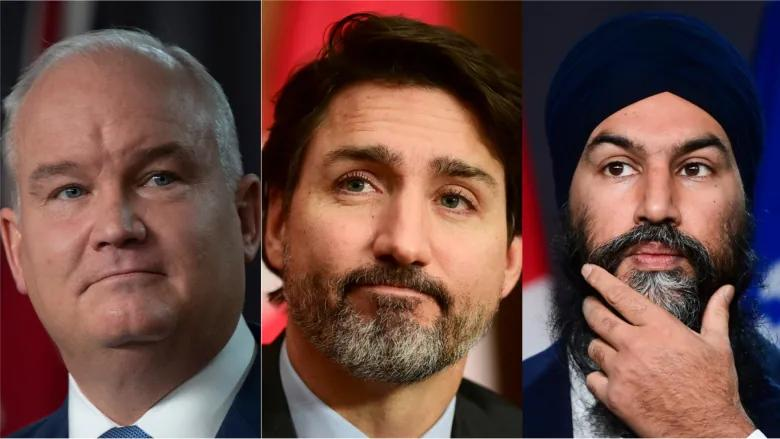
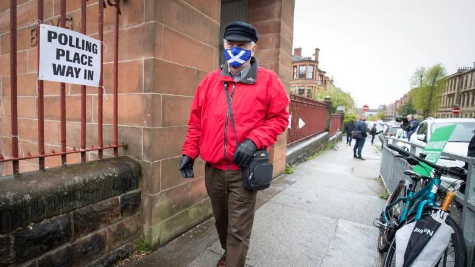

G7 foreign ministers call on China to ‘respect human rights’ in muted censure The G7 group of democratic states ended its foreign ministers summit in London calling on China to “respect human rights and fundamental freedoms”, but drawing back from any decisive action if that fails to take place. Economic considerations, as well as apprehension that even strong language could trigger retaliation by Beijing, led to some member states of the Group successfully limiting the scope of censure....

The three main national parties are firing up their election engines, even as they insist they want to steer clear of a campaign. Liberals, Conservatives and New Democrats are on the move in advance of a potential federal election this year, recruiting candidates, training volunteers and grappling with how to kiss babies and press the flesh in a virtual, pandemic-restricted world. The uncertainty of COVID-19 has left each party...
As Scots contemplate becoming an independent country again — just seven years after deciding against it in a 2014 referendum — Quebec seems further away from independence than it has been for decades. Due to complications related to the COVID-19 pandemic, the complete results of the election held in Scotland on Thursday were only announced on Saturday. The governing Scottish National Party (SNP) fell one seat...
